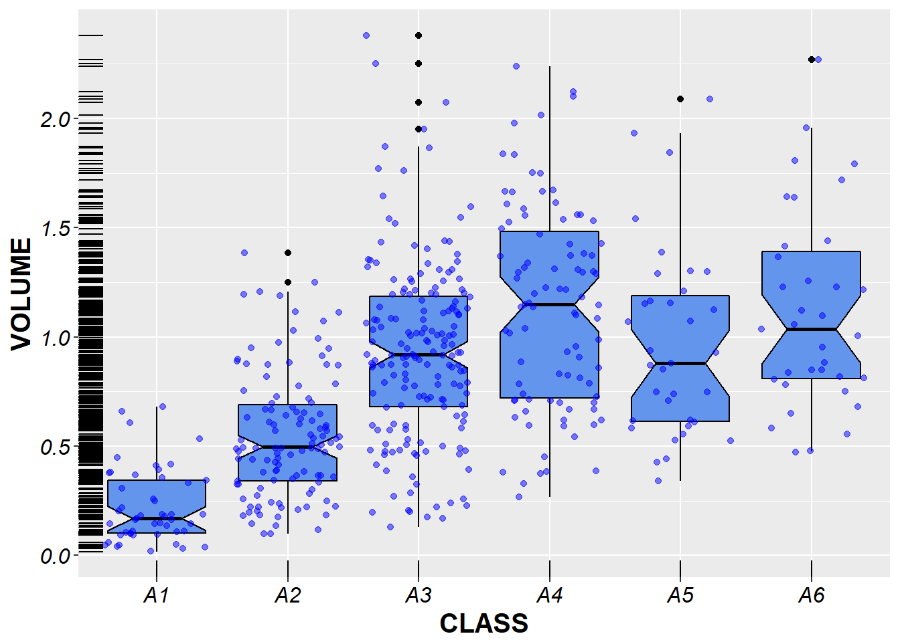

Abalone Analysis
Introduction
Abalones are distributed along the coastlines overwide and it is one of variable seafood. Overfishing is one of the factors putting abalones at the risk of extinction. It is very easy to over harvest because of the slow grow rates and unpredictable reproductive success of abalones. In order to manage abalone harvesting, we need to find a way to quickly study the age composition of abalones in different regions.
We can use a microscope to determine abalone’s age by counting its growth rings. However, this is a slow process. Then a group of investors was trying to predict abalone age based on its physical measurements. They made a conclusion that age cannot be predicted based solely on the physical characteristics. This purpose of this report is to study why the investigators fail to predict age based on physical measurements by using exploratory data analysis. The report will review the abalone data to see whether we can predict age based on physical characteristics provided. In the process, we will also explore potential new predictable physical measurements. The report will focus on investigating whether we can predict abalone age by physical characters with different sexes.
About the data
Important EDA methods to display aspects of these data such as:
- the center or location of distributions,
- the variation in different variables,
- the shape of various distributions,
- the presence of outliers
- differences in data characteristics between abalone classifications.
# Load the abalone data set
abalone <- read.csv("mydata.csv", sep="")str(abalone)## 'data.frame': 500 obs. of 12 variables:
## $ SEX : Factor w/ 3 levels "F","I","M": 1 3 3 1 1 1 2 1 3 2 ...
## $ LENGTH : num 0.705 0.575 0.645 0.625 0.47 0.585 0.275 0.485 0.46 0.575 ...
## $ DIAM : num 0.55 0.455 0.51 0.485 0.35 0.46 0.22 0.365 0.375 0.45 ...
## $ HEIGHT : num 0.17 0.185 0.195 0.135 0.115 0.17 0.08 0.15 0.13 0.135 ...
## $ WHOLE : num 1.219 1.156 1.226 1.302 0.487 ...
## $ SHUCK : num 0.639 0.552 0.589 0.61 0.196 ...
## $ VISCERA: num 0.236 0.243 0.222 0.268 0.127 ...
## $ SHELL : num 0.301 0.295 0.374 0.36 0.155 ...
## $ RINGS : int 9 13 10 14 8 9 6 7 9 10 ...
## $ CLASS : Factor w/ 6 levels "A1","A2","A3",..: 3 5 3 5 2 3 1 2 3 3 ...
## $ VOLUME : num 0.0659 0.0484 0.0641 0.0409 0.0189 ...
## $ DENSITY: num 18.5 23.9 19.1 31.8 25.7 ...# Convert **RINGS** to factor because the value between does not have meaning
abalone$RINGS <- as.factor(abalone$RINGS)About the abalone data (4141 observations and ten variables)
- SEX = M (male), F (female), I (infant)
- LENGTH = Longest shell length in mm
- DIAM = Diameter perpendicular to length in mm
- HEIGHT = Height perpendicular to length and diameter in mm
- WHOLE = Whole weight of abalone in grams
- SHUCK = Shucked weight of meat in grams
- VISCERA = Viscera weight in grams
- SHELL = Shell weight after drying in grams
- RINGS = Age (+1.5 gives the age in years)
- RINGS = Age (+1.5 gives the age in years)
- CLASS = Age classification based on RINGS (A1= youngest,., A6=oldest)
options(digits=4)
numericSummaryStats<-function(x){
c(
Min=min(as.numeric(x)),
Q = quantile (as.numeric(x), 0.25),
Median= median(as.numeric(x)),
Mean= mean(as.numeric(x)),
Q = quantile (as.numeric(x), 0.75),
Max=max(as.numeric(x))
)}
NumericSummary<- sapply(abalone[,2:8], numericSummaryStats)
library("knitr","xtable")## Warning: package 'knitr' was built under R version 3.4.3kable(NumericSummary,format="pandoc",caption="Numeric Variable Summary")| LENGTH | DIAM | HEIGHT | WHOLE | SHUCK | VISCERA | SHELL | |
|---|---|---|---|---|---|---|---|
| Min | 0.1550 | 0.1050 | 0.0300 | 0.0175 | 0.0050 | 0.0035 | 0.0050 |
| Q.25% | 0.4600 | 0.3538 | 0.1150 | 0.4740 | 0.1979 | 0.0999 | 0.1350 |
| Median | 0.5400 | 0.4200 | 0.1400 | 0.7865 | 0.3285 | 0.1715 | 0.2362 |
| Mean | 0.5263 | 0.4088 | 0.1392 | 0.8296 | 0.3617 | 0.1822 | 0.2354 |
| Q.75% | 0.6100 | 0.4762 | 0.1650 | 1.1405 | 0.5091 | 0.2566 | 0.3200 |
| Max | 0.7450 | 0.6000 | 0.2400 | 2.3810 | 1.1565 | 0.5500 | 0.7800 |
Above a simple summary for the variables measuring the length and weight of abalones from the 500 sample. The minimum value, first quartile, median, mean, upper quartile, and maximum value helps us understand the distribution of the variables. By comparing the mean and median, it looks like the shell weight maybe symmetrical distributed because the two values are very close. LENGTH and DIAM are negatively skewed because the median is larger the mean.
In order to have a better idea of the relationships between the numeric variables, we have the scatterplots for the variables that summarized in Figure2. There are clear linear relationships between LENGTH, DIAM, and HEIGHT. LENGTH measures the longest length of the abalone shell. DIAM is the diameter perpendicular to LENGTH. HEIGHT is perpendicular to length and diameter. The width and the height of the shell will get larger as the shell length becomes larger. The linear relationship between WHOLE and SHUCK is also strong. It makes sense as the whole weight included the shuck weight of the abalone. It also looks like the positive relationship between SHUCK and VISCERA, VISCERA and SHELL are strong. However, the points are spread out. In addition, from the right upper plots and the left lower plots, initially, as the lengths (LENGTH and DIAM) get longer, the weights, no matter how it measured, they are quite stable. When the LENGTH gets more than 0.4mm, the weights of the abalones increase very fast, and the rate of increases get faster. While the abalone reach a big weight, the lengths of the shell increase very little, it more like the shell won’t get bigger. In addition, it looks like there are some outliers come from the abalones with very high shell weight after dying.
plot(abalone[,2:8])
Sex_Class <- addmargins(table(abalone$SEX, abalone$CLASS))
kable(Sex_Class,format="pandoc",caption="Sex by Age Class")| A1 | A2 | A3 | A4 | A5 | A6 | Sum | |
|---|---|---|---|---|---|---|---|
| F | 2 | 29 | 61 | 40 | 10 | 15 | 157 |
| I | 41 | 61 | 35 | 8 | 3 | 5 | 153 |
| M | 6 | 24 | 80 | 43 | 22 | 15 | 190 |
| Sum | 49 | 114 | 176 | 91 | 35 | 35 | 500 |
Above groups female, infant and male abalones by shell classification. Because A1 indicates the youngest abalones and A6 represent the oldest. Apparently, infants should fall into the young groups. But there some infants also belong to older groups, even A6. In Figure4, we can also get that most female and male abalones fall in age A3. Overall, there are more male abalones than female abalones.
As there are clear linear relationships between LENGTH, DIAM, and HEIGHT showing in above, we will create a new variable called VOLUME. VOLUME is calculated by multiplying LENGTH, DIAM and HEIGHT together.
VOLUME <- abalone$LENGTH * abalone$DIAM * abalone$HEIGHT
abalone <- data.frame(abalone, VOLUME)
library(ggplot2)## Warning: package 'ggplot2' was built under R version 3.4.3library(gridExtra)## Warning: package 'gridExtra' was built under R version 3.4.3ggplot(data=abalone, aes(x=WHOLE, y=VOLUME)) +
geom_point(pch=16, color="black", size=2) +
geom_smooth(method="lm", se = FALSE, color="blue", size=1.2, linetype=2) +
labs(title="Plot WHOLE Versus VOLUME", x="Whole weight of abalone (grams)", y="VOLUME") +
theme(
title = element_text(size = 18, color = "black", face = "bold"),
axis.text = element_text(colour = "black", size = 12, face = "italic"),
axis.text.y = element_text(colour = "black",size = 12),
axis.title = element_text(size = 15, color = "black", face = "bold"),
axis.title.y = element_text(size = 15, color = "black", face = "bold")
)
Above is the plot between the whole weight of abalone and its volume. The blue dash represents best fit for the black dots in the graph. Most of the black dots fall on or very close to the blue line when the whole weight within 0.5 grams and its less than 0.025 〖mm〗^3. The dots get far away from the blue line as the weights gets larger. However, the VOLUMN has a positive linear relationship with the whole weight overall. Because VOLUMN is the product of LENGTH, DIAM, and HEIGHT. Those three values showing positive relationship with whole weight. However, the relationship looks weak when the abalone reach 0.5 grams and higher.
DENSITY <- abalone$WHOLE/abalone$VOLUME
abalone <- data.frame(abalone, DENSITY)
# Using DENSITY, present a matrix showing histograms, boxplots and Q-Q plots differentiated by sex.
# The first row would show the histograms,
# The second row would show the boxplots
# The third row would show the Q-Q plots.
par(mfrow = c(3,3))
hist((abalone[abalone[,1] == "F", 12]),main="Female Histogram",xlab = NULL, col = "red")
hist((abalone[abalone[,1] == "I", 12]),main="Infant Histogram",xlab = NULL,col = "blue")
hist((abalone[abalone[,1] == "M", 12]),main="Male Histogram",xlab = NULL, col = "green")
boxplot((abalone[abalone[,1] == "F", 12]), main="Female Boxplot", ylab="DENSITY",col = "red")
boxplot((abalone[abalone[,1] == "I", 12]), main="Infant Boxplot", ylab="DENSITY",col = "blue")
boxplot((abalone[abalone[,1] == "M", 12]), main="Male Boxplot", ylab="DENSITY",col = "green")
qqnorm(abalone[abalone[,1] == "F", 12], ylab = "Sample Quantiles for Female",
main = "Q-Q Plot for Female",
col = "red",cex.axis = 1.5, cex = 1.5)
qqline(abalone[abalone[,1] == "F", 12])
qqnorm(abalone[abalone[,1] == "I", 12], ylab = "Sample Quantiles for Infant",
main = "Q-Q Plot for Infant",
col = "blue",cex.axis = 1.5, cex = 1.5)
qqline(abalone[abalone[,1] == "I", 12])
qqnorm(abalone[abalone[,1] == "M", 12], ylab = "Sample Quantiles for Male",
main = "Q-Q Plot for Male",
col = "green", cex.axis = 1.5, cex = 1.5)
qqline(abalone[abalone[,1] == "M", 12]) 
Above is showing the density histograms, boxplots, and Q-Q plots by sex. We can look the histograms with Q-Q plots to investigate whether the density distributions are normally distributed. On the right corners of the three Q-Q plots, we can see the dots above the black lines, which indicating that female, infant, and male DENSITY distributions right skinny tales. However, most of the dots fall on the black lines, which indicating female, infant and male density can treat normally distributed. The histograms also showing long right tails, which confirm we find from Q-Q plots.
On the second- boxplots, the circle dots showing on the boxplots indicating the outliers. All the sexes have extremely high densities. One female abalone has extremely low density as a circle dot at the bottom of the red boxplot. By comparing the maximum and minimum values from boxplots, we can see infant abalone density fall in a smaller range and interquartile range (IQR) comparing to female and male abalones. The interquartile range represented by the dots in the boxes, which takes up 50% of all the observations. However, when we refer to the density histogram x-axes, the infant has the biggest range as the right tail reaches to 45, comparing 35 for both female and male. That’s because the boxplot taking outliers into consideration.
library(moments)
options(digits=4)
Skew.Stats<-function(x){
c(
Skewness = skewness(as.numeric(x)),
kurtosis = kurtosis(as.numeric(x))
)}
library(plyr)## Warning: package 'plyr' was built under R version 3.4.3SEX.Skewness<- tapply(abalone$DENSITY, abalone$SEX, FUN=Skew.Stats)
options(digits=4)
Dis.Stats<-function(x){
c(
Min=min(as.numeric(x)),
Q = quantile (as.numeric(x), 0.25),
Median= median(as.numeric(x)),
Q = quantile (as.numeric(x), 0.75),
Max=max(as.numeric(x)),
IQR = (quantile (as.numeric(x), 0.75)- quantile (as.numeric(x), 0.25)),
Range = (max(as.numeric(x))- min(as.numeric(x)))
)}
# library(plyr)
SEX.Density<- tapply(abalone$DENSITY, abalone$SEX, FUN=Dis.Stats)
SEX.Density## $F
## Min Q.25% Median Q.75% Max IQR.75% Range
## 14.68 22.17 23.86 26.19 37.44 4.02 22.76
##
## $I
## Min Q.25% Median Q.75% Max IQR.75% Range
## 17.067 22.666 24.304 26.671 44.928 4.006 27.861
##
## $M
## Min Q.25% Median Q.75% Max IQR.75% Range
## 19.113 22.785 24.341 25.841 35.356 3.056 16.243Above shows the IQR and Range with outliers included. We can see a higher IQR and Range for the DENSITY of infant abalones.
For far, it seems like that for the surprising high density (DENSITY >35) abalones, they are very likely are infants. However, the majority of the abalones from different sexes fall from the DENSITY 22 to 26. We cannot base on density to group abalone sex.
# VOLUME boxplots differentiated by CLASS
ggplot(abalone, aes(x=CLASS, y=VOLUME)) +
geom_boxplot(fill="cornflowerblue", color="black", notch= TRUE)+
geom_point(position="jitter", color="blue", alpha=.5)+
geom_rug(side="l", color="black") +
labs(title= NULL, x="CLASS", y="VOLUME") +
theme(
axis.text = element_text(colour = "black", size = 12, face = "italic"),
axis.text.y = element_text(colour = "black",size = 12),
axis.title = element_text(size = 15, color = "black", face = "bold"),
axis.title.y = element_text(size = 15, color = "black", face = "bold"))## Warning: Ignoring unknown parameters: sideFrom WHOLE differenced by SEX boxplots, we can know that infant abalones have Signiant lower whole weight comparing to female and male abalones’.
The WHOLE difference found among the sexes. Then we are trying to look whole with SEX and CLASS together
# WHOLE boxplots differentiated by CLASS
ggplot(abalone, aes(x=CLASS, y=WHOLE)) +
geom_boxplot(fill="cornflowerblue", color="black", notch= TRUE)+
geom_point(position="jitter", color="blue", alpha=.5)+
geom_rug(side="l", color="black") +
labs(title= NULL, x="CLASS", y="VOLUME") +
theme(
axis.text = element_text(colour = "black", size = 12, face = "italic"),
axis.text.y = element_text(colour = "black",size = 12),
axis.title = element_text(size = 15, color = "black", face = "bold"),
axis.title.y = element_text(size = 15, color = "black", face = "bold"))## Warning: Ignoring unknown parameters: side
DENSITY differenced by SEX, we can know there are not much density difference among three sexes.
# VOLUME boxplots differentiated by CLASS
ggplot(abalone, aes(x=SEX, y=VOLUME)) +
geom_boxplot(fill="cornflowerblue", color="black", notch= TRUE)+
geom_point(position="jitter", color="blue", alpha=.5)+
geom_rug(side="l", color="black") +
labs(title= NULL, x="CLASS", y="VOLUME") +
theme(
axis.text = element_text(colour = "black", size = 12, face = "italic"),
axis.text.y = element_text(colour = "black",size = 12),
axis.title = element_text(size = 15, color = "black", face = "bold"),
axis.title.y = element_text(size = 15, color = "black", face = "bold"))## Warning: Ignoring unknown parameters: side# WHOLE boxplots differentiated by CLASS
ggplot(abalone, aes(x=SEX, y=WHOLE)) +
geom_boxplot(fill="cornflowerblue", color="black", notch= TRUE)+
geom_point(position="jitter", color="blue", alpha=.5)+
geom_rug(side="l", color="black") +
labs(title= NULL, x="CLASS", y="VOLUME") +
theme(
axis.text = element_text(colour = "black", size = 12, face = "italic"),
axis.text.y = element_text(colour = "black",size = 12),
axis.title = element_text(size = 15, color = "black", face = "bold"),
axis.title.y = element_text(size = 15, color = "black", face = "bold"))## Warning: Ignoring unknown parameters: side# Use aggregate() to compute mean values of WHOLE for each combination of SEX and CLASS.
# Use the resulting object with ggplot to generate a plot of these mean values versus CLASS
# Showing Mean WHOLE versus CLASS for Three Sexes
WHOLE.out <- aggregate(WHOLE~SEX+CLASS, data=abalone, mean)
ggplot(data= WHOLE.out ,aes(x=CLASS, y=WHOLE, group=SEX, colour = SEX))+
geom_line()+geom_point(size=4)+
ggtitle("Plot showing Mean WHOLE versus CLASS for Three Sexes")+
theme(
title = element_text(size = 16, color = "black", face = "bold"),
axis.text = element_text(colour = "black", size = 12),
axis.text.y = element_text(colour = "black",size = 12),
axis.title = element_text(size = 15, color = "black", face = "bold"),
axis.title.y = element_text(size = 15, color = "black", face = "bold")
)
# Showing Mean DENSITY versus CLASS for Three Sexes
DENSITY.out <- aggregate(DENSITY~SEX+CLASS, data=abalone, mean)
ggplot(data= DENSITY.out ,aes(x=CLASS, y=DENSITY, group=SEX, colour = SEX))+
geom_line()+geom_point(size=4)+
ggtitle("Plot showing Mean DENSITY versus CLASS for Three Sexes")+
theme(
title = element_text(size = 16, color = "black", face = "bold"),
axis.text = element_text(colour = "black", size = 12),
axis.text.y = element_text(colour = "black",size = 12),
axis.title = element_text(size = 15, color = "black", face = "bold"),
axis.title.y = element_text(size = 15, color = "black", face = "bold")
)
We will also take a same approach for DENSITY. Above shows mean DENSITY versus CLASS for three sexes. The infant abalones have extremely high average density at young age, and extremely low average density at old ages. However, female and male abalones have more stable average DENSITY. From A2 to A6, Male abalones have higher mean DESENTY than female abalones. Especially at A3 and after, both female and male abalones have much higher average DENSITY than infant abalones. There are good possibilities to predict old abalones by DENSITY.
Conclusion
In summary, it is hard to predict the abalone age by the physical measurements. However, taking SEX in to consideration, we can somehow predict age class by WHOLE and DENSITY. It looks like we can predict young abalones by average whole weight. In addition, there are good possibilities to predict old abalones by DENSITY. When the DENSITY is extremely high or extremely low, they are very likely are infants. By measuring the whole weight of abalones, we know potentially predict infants by the low WHOLE. To be more specifically, when DENSITY is above 25, and WHOLE below 0.375, the abalone very likely are infants with class A1 or A2. When DENSITY below 23.5, and WHOLE Below 0.75, there are also good chances are infants.
When we use samples to study the populations, we have to investigate whether the samples are representative for the populations. First, we have to make sure the sample size is large enough. We can apply central limit theorem to estimate the sample size. Then, we should know how the sample is sampled. Depending on the study purpose and the characters of the population, random, systematic, stratified sampling or other sampling can be used to ensure the samples are representative. Third, we have to consider the sample errors. The samples cannot perfectly represent the populations. In order to truthfully estimate population parameters based on the samples, we should take interval estimate into consideration. This give other ideas the researchers confidence of the estimates and results. From the abalone data, the problems for observation data are potential bias. We can use many ways to describe a group. The measurements used in the study might not enough. The season, location of the coastline, and other factors can affect the abalone ages. I think in different seasons, the physical measurement or even sex might be very different. In addition, there are different kind of abalones. We may have problems to apply what we learned in one kind to other kinds.